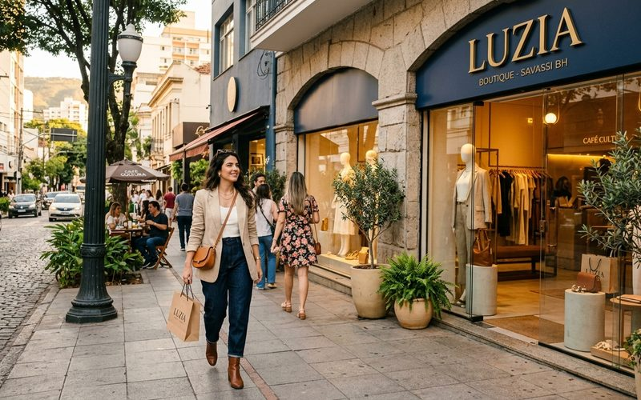

Há bairros que têm alma de moda. Em Belo Horizonte, o Savassi sempre teve essa característica, e nos últimos anos, essa alma ganhou uma camada nova, mais sofisticada e mais consciente. O bairro que já foi sinônimo de shopping centers e lojas de franquias está se redescobrindo como polo de negócios independentes, curadoria e consumo de qualidade. E nesse novo Savassi, o brechó de curadoria não é uma excentricidade, é um símbolo do que o bairro está se tornando.
Entender o Savassi como território de moda é entender Belo Horizonte como cidade. BH é uma metrópole que valoriza a escala humana, o contato presencial, a cultura do café e da conversa, o comércio de rua com rosto e nome. O fast fashion anônimo e impessoal nunca se encaixou completamente nessa cultura, e é por isso que o brechó, com sua dimensão de encontro e descoberta, faz tanto sentido nesse endereço.
O Savassi tem uma concentração incomum de elementos que compõem um ecossistema de estilo: ateliês de costura independentes, lojas de marcas locais, salões de beleza com identidade própria, cafeterias onde pessoas estilosas param para trabalhar ou conversar. Esse ecossistema cria uma atmosfera visual particular, você olha para as pessoas na rua do Savassi e percebe uma atenção ao vestir que não está presente em outros bairros da cidade.
É que o Brechó Outra Vez existe na Av. do Contorno. Não é por acidente que um brechó de curadoria está no Savassi, é porque o bairro criou as condições para que ele florescesse: clientes que valorizam qualidade sobre quantidade, que têm olhar treinado para distinguir uma peça bem construída de uma mediocre, e que entendem a curadoria como um serviço genuíno, não como uma justificativa de preço.
Belo Horizonte tem uma tradição de garimpo que poucos reconhecem como tal. A Feira de Arte, Artesanato e Produção Cultural da Afonso Pena, que acontece aos domingos, é um dos maiores eventos de troca e circulação de objetos da cidade, e inclui peças de vestuário, acessórios e joias que são, em essência, garimpo de bairro. A cultura do bazaar beneficente, do desapego solidário, da renovação do guarda-roupa de vizinha para vizinha, tudo isso é parte do tecido social belo-horizontino.
O brechó de curadoria é a versão sofisticada e permanente dessa tradição. Com seleção criteriosa, espaço cuidado, ambiente acolhedor e um acervo que se renova constantemente, ele oferece a experiência do garimpo sem o desgaste de vasculhar sem direção. É o garimpo editado para a mulher que tem gosto apurado e respeita seu próprio tempo.
O Savassi da moda consciente não é um projeto futuro, ele está acontecendo agora, a cada visita ao Outra Vez, a cada peça que encontra nova dona, a cada história que começa no nosso espaço na Av. do Contorno. É uma transformação silenciosa, mas profunda, e ela começa sempre no ato mais simples e mais poderoso da moda: escolher uma peça com cuidado e com intenção.